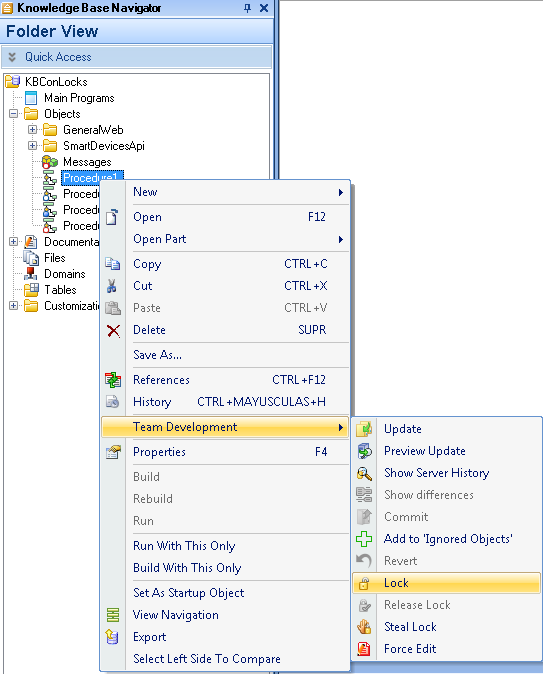

Select the objects in your working copy KB for which you want to acquire a lock, then select the Team Development contextual menu Lock option. Check the Team Development output detail for further information, the operation status will be displayed there.  Suppose you want to lock the Invoice Transaction, the following detail will be displayed on the output: ========== Lock started ========== Contacting GeneXus Server at 'http://....'... done! Exporting Transaction 'Invoice'... Export File Created At: 'C:\Users\genexus\AppData\Local\Temp\tmp2F9C.xpz' GeneXus Server: Processing file... GeneXus Server: Checking Import References...... Finished GeneXus Server: Reading import file objects...... Finished GeneXus Server: Export File Created At: 'C:\Windows\TEMP\tmp3C6F.xpz' Processing file 'C:\Users\genexus\AppData\Local\Temp\tmp4446.tmp'... Checking Import References...Finished Reading import file objects...Finished Transaction 'Invoice' Locked done! Lock Success When a lock operation is unsuccessful, it is detailed the user and working copy Knowledge Base which has the locked object.Â
========== Lock started ========== Contacting GeneXus Server at 'http://...'... done! Exporting Transaction 'Invoice'... Export File Created At: 'C:\Users\genexus\AppData\Local\Temp\tmp129A.xpz' GeneXus Server: Processing file... GeneXus Server: Checking Import References...... Finished GeneXus Server: Reading import file objects...... Finished error: GeneXus Server: Transaction 'Invoice' is locked by GXTechnical\genexus in \\MachineName\Models\DealerKB_1 GeneXus Server: Exporting Transaction 'Invoice'... GeneXus Server: Export File Created At: 'C:\Windows\TEMP\tmp1FAE.xpz' Processing file 'C:\Users\genexus\AppData\Local\Temp\tmp264A.tmp'... Checking Import References...Finished Reading import file objects...Finished Lock Failed You can check locks in:
NoteA lock is not assigned to a specific user, but to a specific user and a working copy KB. Having a lock in one working copy also prevents the same user from committing the locked object from another working copy KB.
|
| Backlinks | |
| Force Edit | |
| IDE Icon overlay | |
| Release Lock | Team Development Contextual Menu |